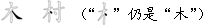
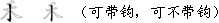

物质“三态”与汉字的“三性”之类比
汉字构成与物质构成
五笔字型键盘及指法
“五笔字型”是一种高效率的汉字输入法，是只使用25个字母键，在键盘上按照汉字的笔画结构（码元）向电脑输入汉字的方法。 这一输入法，有以下特点：
纯形编码，重码少。
适合专职和非专职人员共同使用，是不管读音，完全按字形编码的方法，编码不受方言及是否认识的限制，
编码的唯一性强，平均每输入10000个汉字，才有1～2个字需要人工挑选。因此，是目前世界上效率最高的汉字键盘输入法。
十指打键，效率高。
“五笔字型”用双手10个手指打键。经过标准的指法训练，每分钟向电脑中输入100个字很是平常。
1998年“京城五笔字型大奖赛”，冠军的速度是在错1罚5的严厉评判规则下，每分钟输入生稿293个汉字。
不受读音与方言限制。
中国方言多杂，南腔北调，加上一字多音，给拼音输入造成困难，五笔字型则不存在这些问题。
字词兼容。
用“五笔字型”既能输入单字，还能输入词汇。无论多么复杂的汉字最多只打4下键，无论多长的词汇也只打4下键。
字与词之间，不要任何转换或附加操作，既符合汉字构词灵活、语句中字词很难切分的特点，又能大幅度地提高输入速度。
越打越顺手。
五笔字型”依照“形码设计三原理”研究完成，码元的组合符合“相容性”——使重码最少；键位安排符合“规律性”——使字根易记易学，
而指法设计的“谐调性”——使得各个手指的击键负担趋于合理，打起来顺手，越打越顺手。
全国通用。
“五笔字型”经过了25年之久的大规模社会实践的检验，已成为在国内占主导地位的汉字输入技术，所以，
具有很好的通用性：学会了“五笔字型”，到处都有现成的电脑可供使用；厂家的电脑类产品，
装入了“五笔字型”，全国乃至世界各地都有人不经训练便会操作。
妙不可言————千百种组合只出来一个字。
你若要想事先“感受”一下用“五笔字型”输入汉字的情景和乐趣，请顺序按一下含有“日 刀 口 灬”的键位，
便可用这4个字根“拼合”出一个“照”字来。 再试用“扌 艹 曰 大”这四个字根，“拼合”出一个“摸”字。
这时，就不难发现五笔字型的神奇了：
将R A J D 这4个键各按一下，虽然4个键上全部字根的排列可能性多达10400种，可只有你要的那个“摸”字出来！
10400种可能性，为什么只有“扌 艹 曰 大”起作用呢？为何不会出来别的字？更请注意，仅用这25个键， 不但能打单字，还能打词汇，总是你要的那个组合能出来（字或词），重码是很少很少！五笔字型的发明， 使中国人不必为汉字专门制造价格昂贵的大键盘，而是直接采用原装英文键盘，一个螺丝钉也不用动， 便可以打出成千上万的汉字！岂不奇妙？
其实，这正是五笔字型发明专利的科学性和实用价值！
学员们也许要问：那么多字根，怎么能记得住呢？
学习以下几节的内容，就不难明白其中的道理，就可以学会五笔字型。
字根是由笔画写成。笔画、字根（部件）、整字，是汉字结构的三个层次。
1984年王永民教授给笔画定义为：书写汉字时，一次写成的一个连续不断的线段。
由此可以推知：
两笔写成的，不能叫笔画，例如“十、口”等，它们只能叫“笔画结构”。
一个连贯的笔画不能断开。例如不能把“申”分解为“丨田丨”等。
笔画的分类，困扰学术界久矣！分10种、16种、24种、36种者有之，仅“折”笔就分成25种者有之，五花八门，众说纷纭。
科学自有规律，分类是一切科学的基础。
科学的结论是：按照书写方向划分笔画的类型，如下图所示，则只有5种——横、竖、撇、捺、折。 前4种是单方向的笔画，“折”则代表一切带转折、拐弯的笔画。为了便于记忆和排序， 我们分别用1、2、3、4、5命名5种笔画的代号（这一代号命名，已成为国家标准）：
人们要问：笔画“点”和“提”到哪里去了？
以下例子可作为这张表的补充说明：
“提笔”等于“横”：
“点”等于“捺”：
“竖左钩”等于“竖”：
所有带转折的笔画都算作“折”。
为便于书面表示，以后所有的“折”笔，不管怎么“折”，怎么“弯”，怎么“拐”，一律都有“乙”来表示，其笔画代号都是5。
给笔画分类，并命名以数字代号，是学习王码输入法（五笔字型和数字王码）时最重要的基础知识。
1983年发明五笔字型时，作者对笔画的以上分类法及代号，现在已经被正式写入了代号为GB/T18031-2000的国家标准中。 这就是说，凡是不把笔画分为“一丨丿 乙”5种并用12345来代表的，肯定都不符合国家标准。
在汉字编码实践中，有人之所以出现编码错误，或对键盘上字根排列的规律性“视而不见”， 其根本原因，常常是因为没有掌握好五种单笔画的分类及其数字代号。
习惯上，我们把构成汉字的基本笔画结构，称作“字根”或“部件”。而当“字根”或“部件”用于编码的时候， 又可以把它们叫做“码元”，意思是编码的“元素”。
汉字是一种平面文字，同样几个字根，同样的先后顺序，摆放的位置不同，就是不同的字。如：
叭——只 吧——邑
呐——呙 岂——屺
可见，字根相互间的位置关系，也是汉字图形的一个特征，在汉字编码中， 用数字代表这个特征，就成为很有用的、用以分区“重码”的“识别”信息。
根据构成汉字的各个字根之间的位置关系，我们可以把成千上万的方块汉字，分为三种字型：
左右型：字根左右排列。
上下型：字根上下排列。
杂合型：字根互相周围或交叉套迭。
现在，我们根据各种字型拥有汉字的多少，顺序将字型命以数字代号，如下表所示。
从此以后，我们便约定：
1型字，即指“左右型”汉字，其代号为1；
2型字，即指“上下型”汉字，其代号为2；
3型字，即指“杂合型”汉字，其代号为3。
将来，我们给汉字编码时，字型及其代号将非常有用。
这里应当说明，以后我们也会学到，在五笔字型中，仅仅对于那些结构简单的字， 也即由2个或3个字根组成的字，我们才关心它的“字型”。
这是因为，当一个字由4个或4个以上的字根组成时，例如：照、攀、餐等，已经可以“拆”成许多个字根用于编码， 其“信息量”已经足够多了，所以在编码中就不再考虑是什么“型”的字了。